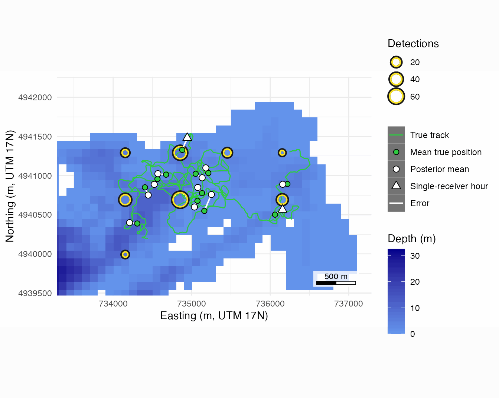
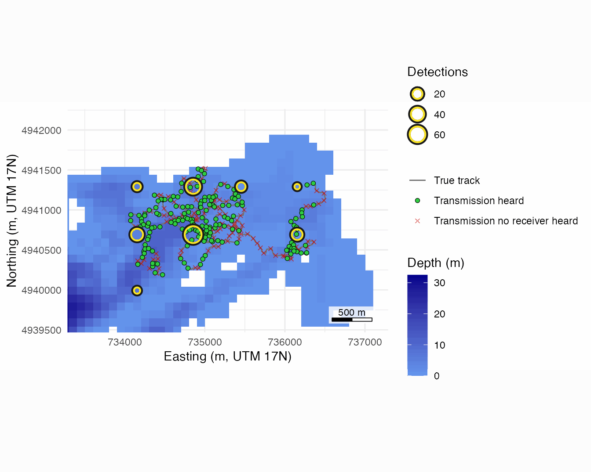
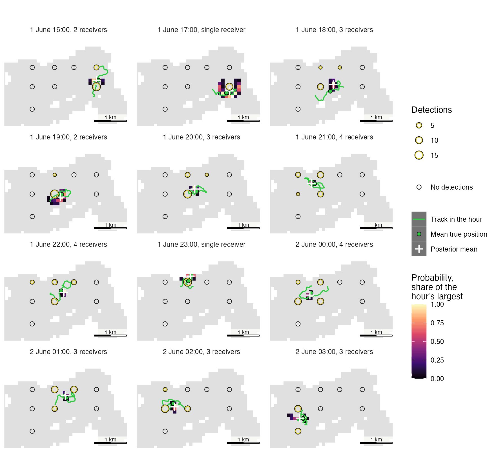
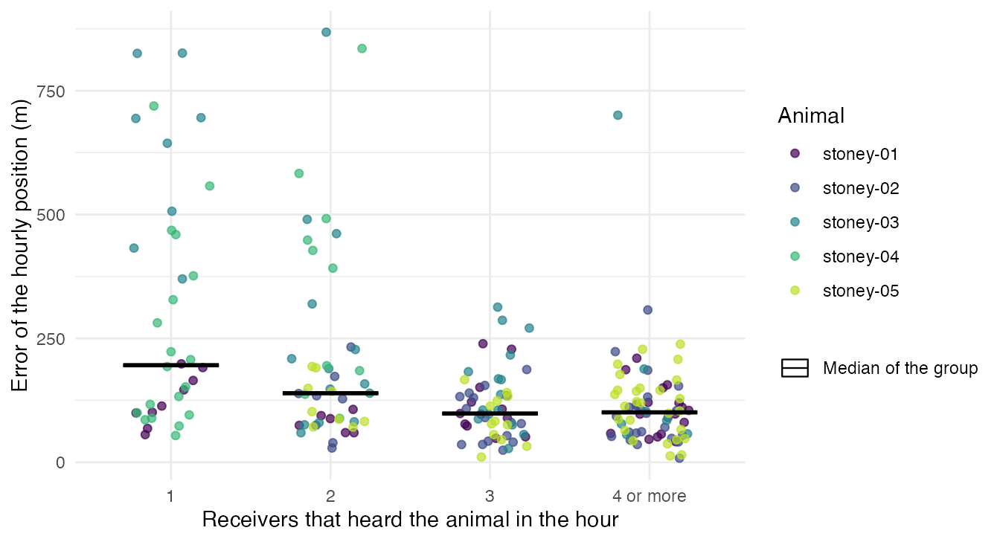
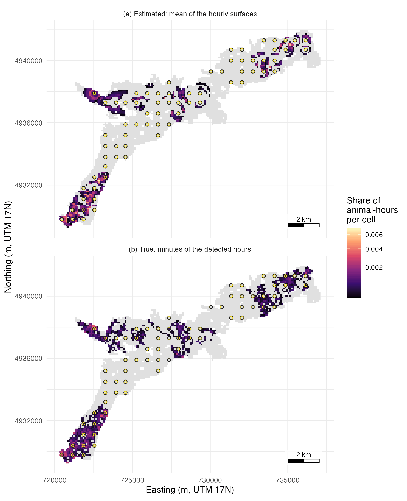

A location surface gives, for one animal and one hour, the
probability that the animal was in each water cell. This page reads the
surfaces of the five simulated animals included in
stoney_track against their true tracks: where the hourly
positions fall, how often the 95% regions hold the animal, and where the
mean of the surfaces puts the animals. The study has 70 receivers on a
grid with 600 to 700 m between neighbours on Stoney Lake. The detections
were drawn from a known range model, and the surfaces below use it. Get started builds the field and the surfaces
step by step.
The model
Each surface is a posterior distribution of one animal’s position
over the water cells of the raster, computed by Bayes’ rule from one
hour’s detection counts. The data of an hour are, for every receiver
listening in it, the number of the tag’s transmissions that receiver
detected. bin_detections() keeps the hours with at least
one detection and gives every listening receiver of such an hour a
count, 0 for the silent ones.
The number of transmissions sent in the hour, \(n_t\), is not observed. It is the expected number, the hour divided by the tag’s mean delay and rounded: 24 for the Stoney tags’ delay of 120 to 180 s, the same in every hour, and treated as known. With a random delay the true number varies: in this simulation the tags sent 23 to 26 transmissions an hour, and 99 of the 240 animal-hours differ from 24.
The detection field supplies the probability that a receiver detects
one transmission sent from the centre of a cell, read from the range
model at the distance through water between them and at the receiver’s
depth (de_field()). Each receiver’s count is binomial in
the transmissions with that probability, and the receivers are
independent given the cell:
\[ L_t(c) = \prod_{s \in R_t} \binom{n_t}{y_{st}}\, p_s(c)^{\,y_{st}} \left[1 - p_s(c)\right]^{\,n_t - y_{st}}, \qquad P_t(c) = \frac{L_t(c)}{\sum_{c'=1}^{W} L_t(c')} , \]
where \(t\) is the hour, \(R_t\) the receivers listening in it, \(y_{st}\) the detections receiver \(s\) logged, \(n_t\) the expected transmissions, \(p_s(c)\) the field’s detection probability for receiver \(s\) and cell \(c\), \(W\) the number of water cells (\(c\) and \(c'\) run over all of them), \(L_t(c)\) the likelihood of the hour’s counts with the animal in cell \(c\), and \(P_t(c)\) the posterior probability of cell \(c\). The likelihood is normalised over every water cell of the raster, which is a flat prior over water, \(1/W\) for every cell. A receiver that heard nothing contributes \(\left[1 - p_s(c)\right]^{n_t}\), which is smallest near it, so its silence lowers the probability of the cells round it.
The default of location_surface(),
overdispersion = "station_hour", reads a standard deviation
\(\sigma\) from the range model. With
\(\sigma > 0\) each receiver’s
binomial term is averaged over a receiver-hour effect \(u_{st} \sim \mathrm{Normal}(0, \sigma^2)\)
added to the logit of \(p_s(c)\), so a
receiver may hear more or less in one hour than its curve gives. With
\(\sigma = 0\) the terms are plain
binomials. A range model that gives no \(\sigma\) stops the call, which is why every
example sets sigma = list(station_hour = 0) in
de_model(). The range model on this page has \(\sigma = 0\), as did the simulation that
drew the detections.
A surface is stored as the smallest set of cells holding 0.999 of its
probability. An hour’s 95% credible region
(credible_region()) is the smallest set of cells holding at
least 95% of it. A position draw (sample_locations()) is a
cell drawn with replacement in proportion to \(P_t(c)\) and placed at the cell centre. The
hourly position used below is the posterior mean.
The model assumes:
- the animal stays in one cell for the hour, so the counts of a moving animal are treated as if they came from one place. On this study, where the animals swim about 1.8 km an hour, the 95% regions hold 35% of the true minutes and the hour’s mean true position in 156 of 212 hours (74%), as Credible regions and their coverage measures;
- the tag sits at the centre of its cell, and its depth is ignored;
- each receiver’s detection probability is constant within the hour;
- the detection field is known: the range model is fitted beforehand, from a range test, and its uncertainty is not propagated to the surface;
- given the cell, transmissions are detected independently, from one transmission to the next and between receivers (with \(\sigma > 0\), independently given the receiver-hour effects);
- every detection is a true transmission of this tag, with no false detections and no code collisions;
- the transmissions sent and the receivers listening are known, as \(n_t\) above and from the deployments;
- with
blocked = 0, the default ofde_model(), the curve fitted on clear lines is read across land: 194 of the 7,669 receiver-cell pairs with \(p \ge 0.05\) on this page have land on the straight line between them, the count thatde_field()gives in its message; - no cell is favoured before the counts, so depth, habitat and movement do not enter the prior.
Each hour is computed on its own. No movement model links one hour to the next, so an hour with no detection has no surface and an hour’s surface takes nothing from the hours beside it.
The pieces are those of published methods. Winton et al. (2018) model each receiver’s detections in an interval as binomial in the maximum expected number of transmissions, put a uniform prior on each animal’s centre of activity, and estimate the detection function in the same Bayesian fit, in continuous space. They note that a Poisson count may suit tags whose transmission intervals are programmed to vary, which is the case of the random delays here. Hostetter and Royle (2020) call localization from one occasion’s detections independent localization, a posterior by Bayes’ rule under a uniform prior near the array that uses that occasion’s data alone, and note that binning detections over a longer window estimates the average location during the window. They describe fixing the detection function from range tests as the usual practice and recommend estimating the detection parameters from the telemetry data instead. An hour here is such a window, the detection function is fixed from a range test, the practice they describe, and the space is a grid of water cells. Pedersen and Weng (2013) also multiply per-station likelihoods built from detections and non-detections and resolve them on a grid. Where detfield stops, the published methods go on to a movement model that links time steps: Pedersen and Weng (2013) an Ornstein-Uhlenbeck process fitted as a spatial hidden Markov model, Hostetter and Royle (2020) a Markovian movement process such as Brownian motion, which also predicts positions when the animal was not detected, and Lavender et al. (2025) a Bayesian particle filter and smoother with Bernoulli detections.
# Attach detfield, and ggplot2 for the figures
library(detfield)
library(ggplot2)
# Read the lake raster and the receivers of the example study
lake <- terra::rast(system.file("extdata", "stoney_depth.tif",
package = "detfield"))
receivers <- stoney_track$receivers
# Build the field from the curve the detections were drawn from, spread 0
truth <- stoney_track$truth
curve <- de_logistic(d50 = truth$d50, d05 = truth$d05, depth = truth$depth)
field <- de_field(water_distances(lake, receivers),
de_model(curve, sigma = list(station_hour = 0)))
#> 194 of 7,669 receiver-cell pairs with p >= 0.05 have land on the
#> straight line between them; with blocked = 0 the curve is read on
#> them as if the line were clear. See `blocked` in ?de_model.
# Count detections per animal, hour and listening receiver
counts <- bin_detections(stoney_track$detections, receivers, stoney_track$tags)
# Compute one surface per animal and detected hour
surface <- location_surface(counts, field)
surface
#> Location surface: 5 animals, 212 bins, 5,935 cells kept in all
#> Cells kept per bin: median 19 of 4,818 water cells (range 6 to 220)
#> Likelihood: binomial (detections and misses at every listening
#> receiver)
#> Spread: none (overdispersion = "none")
#> Each bin keeps the smallest set of cells holding 0.999 of its
#> probability
#> Misfit: 10 of 212 bins have a detecting receiver whose count the
#> surface gives a chance below 0.01
#> Near: 47 of 212 bins put under 0.001 of their probability within 223.6
#> to 447.2 m of the receiver with the most detections (per receiver,
#> its farthest cell centre at p >= 0.5)
#> Modes sit a median 316 m (max 707 m) from the nearest detecting
#> receiver, over 212 bins
#> animal_id bin_start cell prob
#> 1 stoney-01 2024-06-01 04:00:00 2502 0.11483362
#> 2 stoney-01 2024-06-01 04:00:00 2836 0.11203970
#> 3 stoney-01 2024-06-01 04:00:00 2669 0.10676424
#> 4 stoney-01 2024-06-01 04:00:00 2670 0.08255190
#> 5 stoney-01 2024-06-01 04:00:00 2837 0.08173784
#> 6 stoney-01 2024-06-01 04:00:00 2334 0.07062173The hourly position below is the posterior mean of each surface, the probability-weighted mean of its cells.
# Take each stored cell's position and probability
cells <- data.frame(animal_id = surface$animal_id,
bin_start = surface$bin_start, prob = surface$prob,
round(terra::xyFromCell(lake, surface$cell), 1))
# Average the cell positions of each hour, weighted by probability
estimates <- aggregate(cbind(x = x * prob, y = y * prob, prob) ~
animal_id + bin_start, data = cells, FUN = sum)
estimates[c("x", "y")] <- estimates[c("x", "y")] / estimates$prob
# Count the receivers that heard the animal in each hour
heard <- counts[counts$y > 0, ]
receivers_heard <- aggregate(list(receivers_heard = heard$station_id),
by = heard[c("animal_id", "bin_start")],
FUN = length)
estimates <- merge(estimates, receivers_heard)
table(estimates$receivers_heard)
#>
#> 1 2 3 4 5 6
#> 36 47 55 54 16 4The truth of an hour is the mean of the animal’s minute positions in it, the point an hourly position estimates:
# Give each true minute position its hour, leaving out the final midnight
track <- stoney_track$track
track <- track[track$datetime < max(track$datetime), ]
track$bin_start <- as.POSIXct(trunc(track$datetime, "hours"))
# Average the minute positions of each hour
true_hours <- aggregate(cbind(x_true = x, y_true = y) ~
animal_id + bin_start, data = track, FUN = mean)
# Join each estimate to its truth and measure the error, in metres
hours <- merge(estimates, true_hours)
hours$error_m <- sqrt((hours$x - hours$x_true)^2 + (hours$y - hours$y_true)^2)
summary(hours$error_m)
#> Min. 1st Qu. Median Mean 3rd Qu. Max.
#> 8.229 74.581 113.346 166.609 186.943 868.215The figures that follow take one animal for 12 hours: the first run of 12 detected hours in which single-receiver hours are as common as in the whole study.
# Turn the study's share of single-receiver hours into a count out of 12
n_single <- round(12 * mean(hours$receivers_heard == 1))
n_single
#> [1] 2
# Test each run of 12 hours from each detected hour, by animal and time
hours <- hours[order(hours$animal_id, hours$bin_start), ]
fits_rule <- function(i) {
run <- hours[hours$animal_id == hours$animal_id[i] &
hours$bin_start >= hours$bin_start[i] &
hours$bin_start < hours$bin_start[i] + 12 * 3600, ]
nrow(run) == 12 && sum(run$receivers_heard == 1) == n_single &&
run$receivers_heard[1] != 1
}
first <- Find(fits_rule, seq_len(nrow(hours)))
animal <- hours$animal_id[first]
window <- hours$bin_start[first] + c(0, 12 * 3600)
in_window <- function(time) time >= window[1] & time < window[2]
# Select the animal's track, transmissions and hourly positions in the window
window_track <- track[track$animal_id == animal & in_window(track$datetime), ]
transmissions <- stoney_track$transmissions
window_tx <- transmissions[transmissions$animal_id == animal &
in_window(transmissions$datetime), ]
window_hours <- hours[hours$animal_id == animal & in_window(hours$bin_start), ]
window_hours[c("bin_start", "receivers_heard", "error_m")]
#> bin_start receivers_heard error_m
#> 13 2024-06-01 16:00:00 2 59.81886
#> 14 2024-06-01 17:00:00 1 113.51245
#> 15 2024-06-01 18:00:00 3 228.16500
#> 16 2024-06-01 19:00:00 2 88.14583
#> 17 2024-06-01 20:00:00 3 89.39851
#> 18 2024-06-01 21:00:00 4 104.74249
#> 19 2024-06-01 22:00:00 4 97.11778
#> 20 2024-06-01 23:00:00 1 165.10684
#> 21 2024-06-02 00:00:00 4 80.46578
#> 22 2024-06-02 01:00:00 3 73.27315
#> 23 2024-06-02 02:00:00 3 107.14765
#> 24 2024-06-02 03:00:00 3 98.39029
# Set the map window to the track and the positions, with 600 m round them
view <- list(x = range(window_track$x, window_hours$x) + c(-600, 600),
y = range(window_track$y, window_hours$y) + c(-600, 600))
in_view <- function(points, margin = 150) {
points$x > view$x[1] + margin & points$x < view$x[2] - margin &
points$y > view$y[1] + margin & points$y < view$y[2] - margin
}
# Sum the animal's detections per receiver over the 12 hours
window_counts <- counts[counts$animal_id == animal &
in_window(counts$bin_start), ]
window_rx <- aggregate(list(detections = window_counts$y),
by = window_counts["station_id"], FUN = sum)
window_rx <- merge(receivers[c("station_id", "x", "y")], window_rx)
window_rx <- window_rx[in_view(window_rx), ]
# Turn depth to metres below the surface (the raster stores it as negative)
depth_cells <- round(terra::as.data.frame(abs(lake), xy = TRUE), 1)
names(depth_cells)[3] <- "depth_m"
c(heard = sum(window_rx$detections > 0), silent = sum(window_rx$detections == 0))
#> heard silent
#> 8 0
# Map depth, track, receivers, then each estimate joined to its truth
single <- window_hours$receivers_heard == 1
# A dark ground for the keys of white marks
dark_key <- theme(legend.key = element_rect(fill = "grey45", colour = NA))
ggplot(depth_cells, aes(x, y)) +
geom_raster(aes(fill = depth_m)) +
scale_fill_depth() +
geom_path(data = window_track, aes(colour = "True track"), linewidth = 0.5) +
layer_receivers(window_rx, count = "detections") +
geom_segment(data = window_hours, aes(xend = x_true, yend = y_true, colour = "Error"),
linewidth = 0.7) +
geom_point(data = window_hours, aes(x_true, y_true, colour = "Mean true position"),
shape = 21, fill = "#2ECC40", size = 2.2) +
geom_point(data = window_hours[!single, ], aes(colour = "Posterior mean"), shape = 21,
fill = "white", size = 2.6) +
geom_point(data = window_hours[single, ], aes(colour = "Single-receiver hour"),
shape = 24, fill = "white", size = 2.8) +
# A constant mapped to colour gives each mark an entry in the key
scale_colour_manual(name = NULL,
values = c("True track" = "#2ECC40", "Mean true position" = "black",
"Posterior mean" = "black", "Single-receiver hour" = "black",
"Error" = "white"),
breaks = c("True track", "Mean true position", "Posterior mean",
"Single-receiver hour", "Error"),
guide = guide_legend(order = 3, theme = dark_key)) +
coord_equal(xlim = view$x, ylim = view$y) +
labs(x = "Easting (m, UTM 17N)", y = "Northing (m, UTM 17N)") +
annotation_scale_bar(location = "br") +
theme_positionr()
Hourly positions of stoney-01 from 16:00 UTC on 1 June to 04:00 UTC on 2 June 2024: the posterior mean of each detected hour’s surface and the animal’s mean true position in the hour. The 2 single-receiver hours are 17:00 and 23:00.
The 10 hours heard by two receivers or more are placed a median 93 m from the truth, and the single-receiver hours 114 and 165 m.
# Join each single-receiver hour to the receiver that heard the animal
single_hours <- merge(hours[hours$receivers_heard == 1, ],
heard[c("animal_id", "bin_start", "station_id")])
single_hours <- merge(single_hours, receivers[c("station_id", "x", "y")],
by = "station_id", suffixes = c("", "_receiver"))
# Measure the distance from the posterior mean to that receiver, in metres
single_hours$to_receiver_m <- sqrt((single_hours$x - single_hours$x_receiver)^2 +
(single_hours$y - single_hours$y_receiver)^2)
round(summary(single_hours$to_receiver_m))
#> Min. 1st Qu. Median Mean 3rd Qu. Max.
#> 10 123 192 216 290 502In a single-receiver hour the surface is a ring or an arc round the one receiver, and its posterior mean lies a median 192 m from that receiver. The error of such an hour is the distance from that point to wherever on the ring the animal swam.
The track and its transmissions
Every transmission of the simulation is in
stoney_track$transmissions, heard or not. In the 12 hours,
the receivers heard 179 of the 286 transmissions of stoney-01:
# Map depth, track, missed then heard transmissions, then receivers
ggplot(depth_cells, aes(x, y)) +
geom_raster(aes(fill = depth_m)) +
scale_fill_depth() +
geom_path(data = window_track, aes(colour = "True track"), linewidth = 0.5) +
geom_point(data = window_tx[window_tx$n_detections == 0, ],
aes(colour = "Transmission no receiver heard"), shape = 4, alpha = 0.6,
size = 1.3) +
geom_point(data = window_tx[window_tx$n_detections > 0, ],
aes(colour = "Transmission heard"), shape = 21, fill = "#2ECC40", size = 1.6,
stroke = 0.3) +
# A constant mapped to colour gives each mark an entry in the key
scale_colour_manual(name = NULL,
values = c("True track" = "grey45", "Transmission heard" = "black",
"Transmission no receiver heard" = "red3"),
breaks = c("True track", "Transmission heard",
"Transmission no receiver heard"),
guide = guide_legend(order = 3)) +
layer_receivers(window_rx, count = "detections") +
coord_equal(xlim = view$x, ylim = view$y) +
labs(x = "Easting (m, UTM 17N)", y = "Northing (m, UTM 17N)") +
annotation_scale_bar(location = "br") +
theme_positionr()
The track of stoney-01 from 16:00 UTC on 1 June to 04:00 UTC on 2 June 2024, one position a minute, with every transmission in that time. The rings count each receiver’s detections of the animal over all 12 hours.
The missed transmissions fall mostly on the stretches of track between receivers, in the middle and the east of the window.
Hour by hour
Each panel below is one hour’s surface with the part of the track swum in that hour. Each surface is scaled to its own largest cell, so that a wide surface and a narrow one are both visible.
# Select the window's surface cells and scale each hour to its largest cell
hour_cells <- cells[cells$animal_id == animal & in_window(cells$bin_start), ]
hour_cells$share <- hour_cells$prob /
ave(hour_cells$prob, hour_cells$bin_start, FUN = max)
hour_cells <- hour_cells[hour_cells$share >= 0.02, ]
# Label each hour by its start and the receivers that heard the animal
label_hour <- function(bin_start) {
n_rx <- window_hours$receivers_heard[match(bin_start, window_hours$bin_start)]
sprintf("%s, %s", trimws(format(bin_start, "%e June %H:00", tz = "UTC")),
ifelse(n_rx == 1, "single receiver", paste(n_rx, "receivers")))
}
panels <- label_hour(sort(window_hours$bin_start))
hour_cells$panel <- factor(label_hour(hour_cells$bin_start), panels)
window_track$panel <- factor(label_hour(window_track$bin_start), panels)
window_hours$panel <- factor(label_hour(window_hours$bin_start), panels)
# Give every water cell a row in every panel, empty outside the surface,
# so each panel is a full grid
water <- depth_cells[c("x", "y")]
hour_grid <- merge(water, data.frame(panel = factor(panels, panels)), by = NULL)
hour_grid <- merge(hour_grid, hour_cells[c("panel", "x", "y", "share")],
all.x = TRUE)
levels(hour_grid$panel)
#> [1] "1 June 16:00, 2 receivers" "1 June 17:00, single receiver"
#> [3] "1 June 18:00, 3 receivers" "1 June 19:00, 2 receivers"
#> [5] "1 June 20:00, 3 receivers" "1 June 21:00, 4 receivers"
#> [7] "1 June 22:00, 4 receivers" "1 June 23:00, single receiver"
#> [9] "2 June 00:00, 4 receivers" "2 June 01:00, 3 receivers"
#> [11] "2 June 02:00, 3 receivers" "2 June 03:00, 3 receivers"The next chunk gives every receiver in the window its count in each hour, for the rings:
# List every receiver once per hour, with that hour's count of the animal
window_counts$panel <- factor(label_hour(window_counts$bin_start), panels)
hour_rx <- data.frame(panel = window_counts$panel,
station_id = window_counts$station_id,
detections = window_counts$y)
hour_rx <- merge(hour_rx, receivers[c("station_id", "x", "y")])
hour_rx <- hour_rx[in_view(hour_rx), ]
nrow(hour_rx)
#> [1] 96
# Map water, each hour's surface, its track segment, truth, estimate, rings
ggplot(hour_grid, aes(x, y)) +
geom_raster(aes(fill = share)) +
scale_fill_probability(name = "Probability,\nshare of the\nhour's largest",
na_value = "grey88") +
geom_path(data = window_track, aes(colour = "Track in the hour"), linewidth = 0.6) +
geom_point(data = window_hours, aes(x_true, y_true, colour = "Mean true position"),
shape = 21, fill = "#2ECC40", size = 1.8) +
geom_point(data = window_hours, aes(colour = "Posterior mean"), shape = 3, size = 2.2,
stroke = 1) +
# A constant mapped to colour gives each mark an entry in the key
scale_colour_manual(name = NULL,
values = c("Track in the hour" = "#2ECC40",
"Mean true position" = "black",
"Posterior mean" = "white"),
breaks = c("Track in the hour", "Mean true position",
"Posterior mean"),
guide = guide_legend(order = 3, theme = dark_key)) +
layer_receivers(hour_rx, count = "detections", size = 1.4, max_size = 3.6,
stroke = 0.5) +
facet_wrap(~panel, ncol = 3) +
coord_equal(xlim = view$x, ylim = view$y) +
scale_x_continuous(breaks = NULL) +
scale_y_continuous(breaks = NULL) +
labs(x = NULL, y = NULL) +
annotation_scale_bar(location = "br", width_hint = 0.3, text_size = 2.2) +
theme_positionr(base_size = 10)
Location surfaces of stoney-01, one panel per hour from 16:00 UTC on 1 June to 03:00 UTC on 2 June 2024.
In the two single-receiver hours the surface surrounds the one receiver that heard the animal (17:00) or curves around one side of it (23:00), and the hour’s track runs through it. In the hours heard by two to four receivers it is a compact patch on or beside the hour’s segment of track.
Error across the five animals
The same scoring on every detected hour of the five animals, by the number of receivers that heard the animal:
# Group the hours by receivers heard, four or more together
hours$heard_by <- factor(pmin(hours$receivers_heard, 4), 1:4,
c("1", "2", "3", "4 or more"))
# Summarise hours and error per group, in metres
data.frame(hours = tapply(hours$error_m, hours$heard_by, length),
median_error_m = round(tapply(hours$error_m, hours$heard_by, median)),
q90_error_m = round(tapply(hours$error_m, hours$heard_by, quantile,
probs = 0.9)))
#> hours median_error_m q90_error_m
#> 1 36 196 695
#> 2 47 139 473
#> 3 55 98 205
#> 4 or more 74 101 195
# Summarise each animal: hours, share heard by one receiver, median error
data.frame(hours = tapply(hours$error_m, hours$animal_id, length),
single_receiver = round(tapply(hours$receivers_heard == 1,
hours$animal_id, mean), 2),
median_error_m = round(tapply(hours$error_m, hours$animal_id, median)))
#> hours single_receiver median_error_m
#> stoney-01 43 0.21 98
#> stoney-02 48 0.00 92
#> stoney-03 44 0.18 176
#> stoney-04 29 0.66 207
#> stoney-05 48 0.00 108
# Plot error against receivers heard, one point per hour, with the medians
ggplot(hours, aes(heard_by, error_m)) +
geom_point(aes(colour = animal_id), alpha = 0.7, size = 1.6,
position = position_jitter(width = 0.25, height = 0, seed = 1)) +
stat_summary(aes(linetype = "Median of the group"), fun = median, fun.min = median,
fun.max = median, geom = "crossbar", width = 0.6, linewidth = 0.4) +
scale_colour_viridis_d(name = "Animal", end = 0.9) +
scale_linetype_manual(name = NULL, values = "solid") +
labs(x = "Receivers that heard the animal in the hour",
y = "Error of the hourly position (m)") +
theme_positionr()
Error of the posterior mean of each of the 212 detected animal-hours against its mean true position.
The error falls as receivers are added, and the spread falls faster
than the median. 17% of the detected hours are single-receiver hours,
but they hold 11 of the 20 errors above 400 m. stoney-04
spends the two days in the north-west arm, where one receiver covers
most of the water, and is the animal most often heard by one receiver.
An array’s geometry sets how many such hours a study has; the arraydesign
R package designs arrays and tests the performance of tracking systems
on this measure, for a new study or an array already in the water.
Credible regions and their coverage
credible_region() returns each hour’s 95% region: the
smallest set of cells that contains 95% of the surface. Each region is
scored against each true minute of the hour and against the hour’s mean
true position, the point the posterior mean estimates.
# Find the 95% region of every hour
regions <- credible_region(surface, level = 0.95)
region_area <- attr(regions, "summary")
region_key <- paste(regions$animal_id, regions$bin_start, regions$cell)
# Mark each true minute of a detected hour as inside its hour's region or not
track$cell <- terra::cellFromXY(lake, as.matrix(track[c("x", "y")]))
minutes <- merge(track[c("animal_id", "bin_start", "cell")],
hours[c("animal_id", "bin_start", "heard_by")])
minutes$inside <- paste(minutes$animal_id, minutes$bin_start,
minutes$cell) %in% region_key
# Mark each hour's mean true position as inside its own region or not
hours$true_cell <- terra::cellFromXY(lake,
as.matrix(hours[c("x_true", "y_true")]))
hours$mean_inside <- paste(hours$animal_id, hours$bin_start,
hours$true_cell) %in% region_key
# Summarise per hour, then by receivers heard
per_hour <- aggregate(inside ~ animal_id + bin_start, data = minutes, FUN = mean)
per_hour <- merge(merge(per_hour, hours), region_area)
coverage <- data.frame(
hours = tapply(per_hour$inside, per_hour$heard_by, length),
area_ha = tapply(per_hour$area_m2 / 1e4, per_hour$heard_by, median),
minutes_inside = round(tapply(per_hour$inside, per_hour$heard_by, median), 2),
mean_inside = round(tapply(per_hour$mean_inside, per_hour$heard_by, mean), 2)
)
coverage
#> hours area_ha minutes_inside mean_inside
#> 1 36 20 0.57 0.81
#> 2 47 11 0.35 0.68
#> 3 55 7 0.32 0.75
#> 4 or more 74 6 0.22 0.73
c(minutes_inside = round(mean(minutes$inside), 3),
hours_mean_inside = sum(hours$mean_inside), hours = nrow(hours))
#> minutes_inside hours_mean_inside hours
#> 0.353 156.000 212.000Both fall short of 95%. The regions contain 35% of the true minutes, from a median 57% of an hour’s minutes in single-receiver hours, whose regions are a median 20 ha, to 22% with four receivers or more, at 6 ha. The hour’s mean true position is inside its own region in 156 of 212 hours (74%; 81%, 68%, 75%, and 73% by receivers heard). So the regions miss part of each moving animal’s hour, and in a quarter of hours they also miss the position the posterior mean estimates. The surface explains an hour’s counts as if they came from one cell; the counts of an animal that swims about 1.8 km in the hour average over the cells it passed, which no one cell reproduces, and the region is likely narrower than the hour’s real uncertainty. Read an hourly region as a guide to where the animal spent part of the hour, with the coverage measured here.
Where the animals were
A use map sums the hourly surfaces: each cell’s mean probability over all detected hours, so each hour adds one unit of probability however wide its surface. The true use is the share of the detected hours’ minutes spent in each cell:
# Average the hourly surfaces per cell over all detected hours
use <- aggregate(list(share = surface$prob), by = list(cell = surface$cell),
FUN = sum)
use$share <- use$share / nrow(hours)
# Share of the true minutes of the detected hours in each cell
true_use <- aggregate(list(share = minutes$cell),
by = list(cell = minutes$cell), FUN = length)
true_use$share <- true_use$share / nrow(minutes)
# Measure the overlap of the two: 1 when identical, 0 when disjoint
both <- merge(use, true_use, by = "cell", all = TRUE,
suffixes = c("_estimated", "_true"))
both[is.na(both)] <- 0
overlap <- sum(pmin(both$share_estimated, both$share_true))
round(overlap, 2)
#> [1] 0.5The overlap is the probability the two maps share cell by cell.
# Distance from every cell to the nearest cell the animals swam through
visited <- terra::rast(lake)
visited[unique(minutes$cell)] <- 1
to_track <- terra::values(terra::distance(visited), mat = FALSE)
# Share of the use map within 200 m, and in the cells swum through
near_track <- c(within_200_m = sum(use$share[to_track[use$cell] <= 200]),
same_cell = sum(use$share[to_track[use$cell] == 0]))
round(near_track, 2)
#> within_200_m same_cell
#> 0.99 0.91Each map is drawn as the smallest set of its cells whose shares sum to 95% of its total, so the thin tails of wide surfaces do not cover the lake:
# Keep, per map, the smallest set of cells holding 95% of its total
top_95 <- function(map) {
map <- map[order(-map$share), ]
map[cumsum(map$share) - map$share < 0.95 * sum(map$share), ]
}
use_95 <- top_95(use)
true_use_95 <- top_95(true_use)
c(estimated_cells = nrow(use_95), of = nrow(use),
true_cells = nrow(true_use_95), of = nrow(true_use))
#> estimated_cells of true_cells of
#> 913 1999 1253 1604
# Stack the two maps as panels, each cell with its coordinates
panel_names <- c("(a) Estimated: mean of the hourly surfaces",
"(b) True: minutes of the detected hours")
use_cells <- rbind(data.frame(use_95, panel = panel_names[1]),
data.frame(true_use_95, panel = panel_names[2]))
use_cells <- cbind(use_cells, round(terra::xyFromCell(lake, use_cells$cell), 1))
# Give every water cell a row in both panels, empty where it has no share
use_cells <- merge(merge(water, data.frame(panel = panel_names), by = NULL),
use_cells, all.x = TRUE)
use_cells$panel <- factor(use_cells$panel, panel_names)
# Map water in grey, then the shares on one magma scale for both panels
ggplot(use_cells, aes(x, y)) +
geom_raster(aes(fill = share)) +
scale_fill_viridis_c(name = "Share of\nanimal-hours\nper cell",
option = "magma", trans = "sqrt", na.value = "grey88") +
layer_receivers(receivers, size = 1.2, stroke = 0.45) +
facet_wrap(~panel, ncol = 1) +
coord_equal() +
labs(x = "Easting (m, UTM 17N)", y = "Northing (m, UTM 17N)") +
annotation_scale_bar(location = "br") +
theme_positionr()
Where the five animals spent their 212 detected hours over 1 and 2 June 2024: (a) from the hourly surfaces; (b) from the 12,720 true minutes of those hours. Each panel shows the cells holding 95% of its total. The arcs in panel (a) are single-receiver hours.
The estimated map puts 91% of its probability in cells the animals swam through and 99% within 200 m of them, but shares only 50% cell by cell with the true map, because each hour spreads its unit over the cells round the track. It finds each animal’s area and its busiest parts.
# Split each drawn cell's probability by whether its hour had one receiver
cell_mass <- data.frame(animal_id = surface$animal_id,
bin_start = surface$bin_start, cell = surface$cell,
prob = surface$prob)
cell_mass <- merge(cell_mass[cell_mass$cell %in% use_95$cell, ],
hours[c("animal_id", "bin_start", "receivers_heard")])
cell_mass$single_prob <- cell_mass$prob * (cell_mass$receivers_heard == 1)
by_cell <- aggregate(cbind(prob, single_prob) ~ cell, data = cell_mass,
FUN = sum)
# Share of the drawn probability from single-receiver hours
round(sum(by_cell$single_prob) / sum(by_cell$prob), 2)
#> [1] 0.16
# Cells where single-receiver hours give most of it, by animal, in km
ring_cells <- by_cell$cell[by_cell$single_prob > by_cell$prob / 2]
rings <- aggregate(single_prob ~ animal_id + cell, FUN = sum,
data = cell_mass[cell_mass$cell %in% ring_cells, ])
rings <- rings[order(-rings$single_prob), ]
rings <- rings[!duplicated(rings$cell), ]
rings <- cbind(rings, terra::xyFromCell(lake, rings$cell) / 1000)
span <- function(v) paste(round(range(v), 1), collapse = " to ")
data.frame(cells = as.vector(table(rings$animal_id)),
east_km = tapply(rings$x, rings$animal_id, span),
north_km = tapply(rings$y, rings$animal_id, span))
#> cells east_km north_km
#> stoney-01 51 734.9 to 736.5 4940.3 to 4941.7
#> stoney-03 76 723.8 to 730 4936.5 to 4938.6
#> stoney-04 78 721.9 to 723.4 4937.1 to 4938.2Single-receiver hours give 16% of the drawn probability, and most of
the probability of 205 of the drawn cells: 51 of stoney-01, 76 of
stoney-03, and 78 of stoney-04. They are the rings in panel (a):
stoney-04’s in the north-west arm, stoney-01’s
in the north-east basin and stoney-03’s along the middle
basin. The rest of panel (a) comes from hours heard by two receivers or
more.
From positions to habitat selection
Habitat selection: depth use from hourly positions tests depth selection on 40 animals with a known preference.
Hand the positions on
detfield stops at the surfaces, the regions and the
draws. Presence points are cells drawn from each hour’s surface with
sample_locations(), in proportion to its probability:
# Draw 50 cells per detected hour in proportion to its surface
presence <- sample_locations(surface, n = 50, seed = 1)
attr(presence, "estimand")
#> [1] "location of the animal in each detected bin"
nrow(presence)
#> [1] 10600The draws become sf points in the raster’s coordinate system:
# Turn the presence draws to points in the raster's EPSG code
draw_points <- sf::st_as_sf(presence, coords = c("x", "y"),
crs = attr(presence, "epsg"), remove = FALSE)
draw_points[1:3, c("animal_id", "bin_start", "draw", "cell")]
#> Simple feature collection with 3 features and 4 fields
#> Geometry type: POINT
#> Dimension: XY
#> Bounding box: xmin: 735254 ymin: 4940391 xmax: 735354 ymax: 4940491
#> Projected CRS: WGS 84 / UTM zone 17N
#> animal_id bin_start draw cell geometry
#> 1 stoney-01 2024-06-01 04:00:00 1 2502 POINT (735254 4940491)
#> 2 stoney-01 2024-06-01 04:00:00 2 2503 POINT (735354 4940491)
#> 3 stoney-01 2024-06-01 04:00:00 3 2670 POINT (735254 4940391)A CSV keeps one row per draw for a movement model; a GeoPackage keeps the coordinate system with the points for GIS software:
# Write the draws to a CSV and to a GeoPackage layer
csv_file <- file.path(tempdir(), "stoney_draws.csv")
utils::write.csv(sf::st_drop_geometry(draw_points), csv_file,
row.names = FALSE)
gpkg_file <- file.path(tempdir(), "stoney_positions.gpkg")
sf::st_write(draw_points, gpkg_file, layer = "draws",
delete_dsn = file.exists(gpkg_file), quiet = TRUE)
sf::st_layers(gpkg_file)
#> Driver: GPKG
#> Available layers:
#> layer_name geometry_type features fields crs_name
#> 1 draws Point 10600 6 WGS 84 / UTM zone 17NLimits of an hourly surface
A surface exists only for an hour with a detection: the draws
describe detected hours, and an animal is detected more often where the
array covers well. Each hour is computed on its own, as if the animal
stayed in one cell, which sets the coverage measured above. A smoother
that links consecutive hours through a model of movement on the water
grid, giving undetected hours a position and calibrated regions, is
planned for a later version. Positions are as good as the range model:
Range models: bring your own, or start from
two distances shows how to bring yours.
attr(surface, "bins") flags the hours whose counts no
single cell explains.
location_surface(likelihood = "presence_only") uses the
detections alone, without misses or silent receivers;
?location_surface compares it with the binomial reading
used here.
Next
- Habitat selection: depth use from hourly positions: depth use from position draws against the true track, and presence against availability from the detection surface.
- Range models: bring your own, or start from two distances: a range model that varies with depth and date, read into a field per day.
-
Position fish from a cleaned detection
set: the hand-off from the detqc
R package to
bin_detections().
References
Hostetter, N. J. and Royle, J. A. (2020). Movement-assisted localization from acoustic telemetry data. Movement Ecology, 8, 15. DOI 10.1186/s40462-020-00199-6
Lavender, E., Scheidegger, A., Albert, C., Biber, S. W., Illian, J., Thorburn, J., Smout, S. and Moor, H. (2025). Particle algorithms for animal movement modelling in receiver arrays. Methods in Ecology and Evolution, 16, 1808-1819. DOI 10.1111/2041-210X.70028
Pedersen, M. W. and Weng, K. C. (2013). Estimating individual animal movement from observation networks. Methods in Ecology and Evolution, 4, 920-929. DOI 10.1111/2041-210X.12086
Winton, M. V., Kneebone, J., Zemeckis, D. R. and Fay, G. (2018). A spatial point process model to estimate individual centres of activity from passive acoustic telemetry data. Methods in Ecology and Evolution, 9, 2262-2272. DOI 10.1111/2041-210X.13080